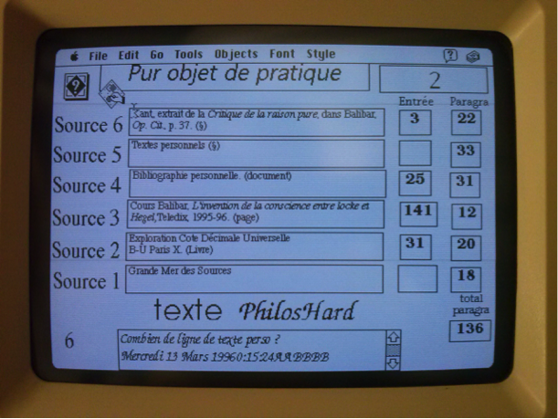

Positionnements
Où suis-je ? Quels sont les textes fondateurs, les cadres épistémologiques, les influences et leurs ramifications qui constituent aujourd’hui mon milieu de connaissances et dans lesquels évoluent ma pensée ?
Pour répondre à ces questions nous explorerons les connaissances qui m’ont influencées et le paysage scientifique qu’elles m’ont amené à découvrir. Ce chapitre présente mon point de vue sur ce paysage, c’est à-dire d’où je le regarde et avec quel niveau de précisions, il donne une représentation de ce que je discerne dans la noosphère (Morin, 1981) (Chardin & Tardivel, 1997) et comment j’y agis. Ce milieu de connaissances est composé par les documents que j’ai consultés au fil des années mais aussi par les personnes avec lesquelles les échanges intellectuels m’ont ouvert à de nouveaux espaces de connaissances. Le troisième élément qui compose cette environnement est constitué par les concepts qui ont émergé de mes expériences. Le quatrième élément est l’ensemble des rapports que je compose avec les documents, les personnes et les concepts.
De l’histoire de l’art aux sciences de l’information et de la communication mon parcours intellectuel m’a donné tout d’abord la chance de découvrir l’art et d’apprendre à voir par la pratique intensive des œuvres et leurs analyses complexes. Plus particulièrement, lors de mes recherches en maîtrise sur la gravure au XVIIIe siècle j’ai analysé à travers une exploration des catalogues de ventes, comment un des premiers réseau de diffusion à grande échelle des images contribuait à l’histoire du goût. Puis mon travail de DEA sur l’influence de John Cage m’a fait découvrir quatre notions fondamentales des théories du chaos : les catastrophes (Thom, 1975), les objets fractals de Mandelbrot, les attracteurs étranges selon Ruelle et les structures dissipatives selon Prigogine (Gleick, 1999). Surtout, j’ai compris les rapports intimes entre ces notions et les sciences humaines à travers mes lectures simultanées de (Foucault, 1969), (Deleuze, 1988), (Guattari, 1992) et (Morin, 1981, 1985, 1992, 1995, 2001). De cette période date mes premières rencontres intellectuelles d’importances au centre Thomas More du couvent de la Tourette (Cavalin, 2017) où j’ai eu la chance de discuter avec Michel Serres, Regis Debray, Michel Pastoureau, Pascal Ory et les frères dominicains... C’est à cette période aussi que je mène mes premières expériences de générations hypertextuelles avec le logiciel Hypercard1 et que je découvre comment le chaos informatique est utile aux sciences humaines en ayant l’intuition d’une machine à stimuler les connaissances par une mise en situation synesthésique...

Curieux d’explorer plus précisément cette intuition, je me lance dans une thèse grâce à ma rencontre avec Jean-Pierre Balpe et Imad Saleh qui m’encouragent à travailler sur la conception d’agents autonomes pour générer des hypertextes adaptatifs. Trop autonome, je ne réalise pas à l’époque l’importance de travailler collectivement dans un laboratoire de recherche, je parts en voyage et mène mes recherches de manière solitaire jusqu’à ce que dix ans plus tard je retrouve Jean-Pierre et Imad. Fort de nouvelles expériences comme consultant spécialiste en système d’information et en développement Web, je reviens à l’université pour cette fois participer activement à la vie du laboratoire Paragraphe, tout d’abord comme conférencier puis chargé de cours et professeur contractuel. L’opportunité d’un contrat doctoral me permet de mener à bien une thèse sous la direction d’Imad Saleh et de m’inscrire pleinement dans une carrière universitaire que je mène comme Maître de conférence en science de l’information et de la communication depuis 2013.
L’atmosphère très fertile au sein de Paragraphe et les relations intenses que ce laboratoire entretient avec la communauté des sciences de l’information et de la communication, a stimulé l’engagement de mes recherches dans de multiples collaborations en France et à l’étranger. Celles-ci m’ont permis de découvrir des milieux et des pratiques très diverses, par exemple : avec des institutions prestigieuses comme la Bibliothèque Nationale de France, les Archives Nationales ou l’INA, avec des programmes de recherche ANR comme Biolographes ou Aliento, avec des projets de recherches internationaux comme Arcanes, avec des groupes de recherches comme GENIC ou MANEP, avec des enjeux sociétaux importants comme celui de l’accessibilité, de l’écologie ou de l’éthique.
La participation dès l’origine à trois Projets d’Investissement d’Avenir (PIA) que sont le laboratoire d’excellence H2H, l’IDEFI CréaTIC et l’EUR ArTec, m’a donné la chance de découvrir des projets importants tout à la fois en terme de gouvernance de la recherche que de possibilité d’expérimentation. De même, mon implication dans les instances de l’université Paris 8 en tant que membre du Conseil Documentaire du SCD, du conseil pédagogique de l’UFR STN et de la commission de spécialistes en science de l’information et de la communication, me donne une bonne connaissance des rouages nécessaires et des difficultés qu’il faut surmonter pour que les activités de recherche et la vie des institutions se développent.
Grâce à ces activités, j’ai eu la chance de dialoguer avec de très nombreux chercheurs dont la liste complète serait trop longue à faire figurer ici mais que je remercie vivement pour ces conversations où l’échange de points de vue parfois très différents donnent à la recherche un goût à la fois subtile, surprenant et aventureux.
Dans ce chapitre nous détaillerons ce parcours intellectuel en utilisant les principes de cartographie des connaissances que nous avons présenté plus avant (1.1Principes de cartographie des connaissances p. 12). Nous montrerons quelles sont nos positions dans le domaine des sciences humaines et plus spécifiquement en science de l’information et de la communication.ques mais dans un premier temps nous exposerons les processus de veille que nous avons mis en place pour cultiver notre écosystème de connaissances.
Footnotes
↩︎https://fr.wikipedia.org/wiki/HyperCard